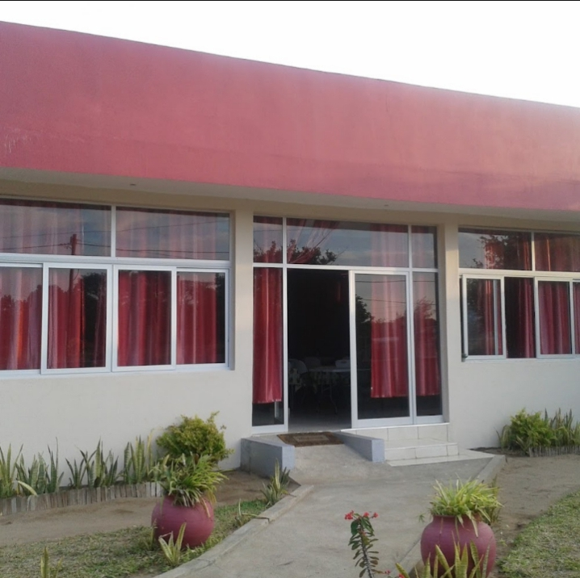
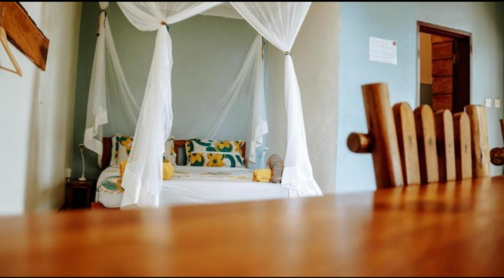
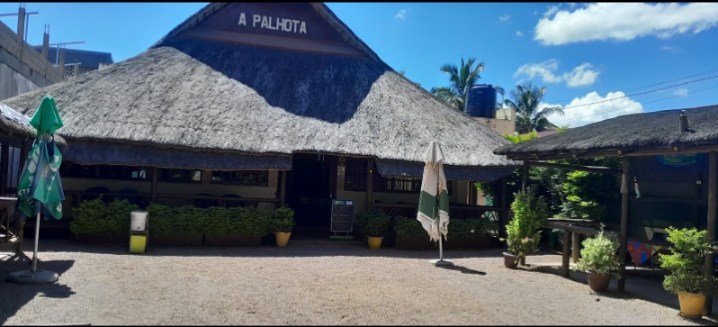
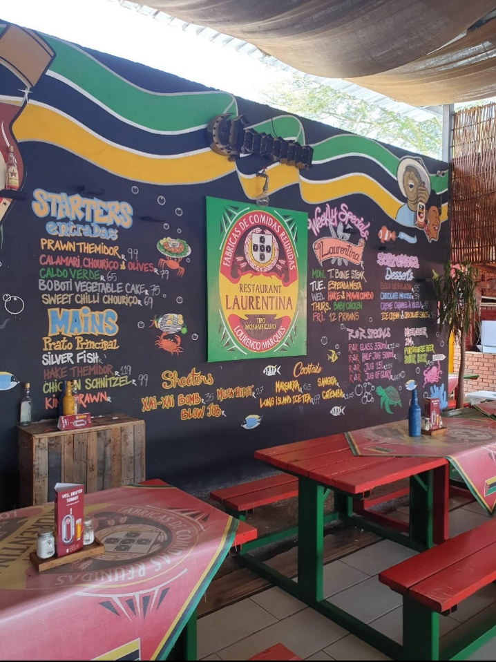

Onde comer e dormir
Quatro locais ao longo da EN1, com informação recolhida no Google Maps.


Themba Oasis Accommodation
Hospedaria · avaliação 4,5
- Endereço
- Manhiça, Maputo 1122
- Telefone
- +258 85 568 6508

Palhota Restaurant
Restaurante · avaliação 3,9 · aberto das 08:00 às 21:30
Restaurante típico com teto de palhota. Serve frango, peixe e caril.
- Endereço
- N1, Manhiça
- Telefone
- +258 84 510 5050

Restaurante Laurentina
Restaurante e bar · 200–600 MT por pessoa
Também aparece no MAPS.ME.
- Endereço
- EN1, Manhiça